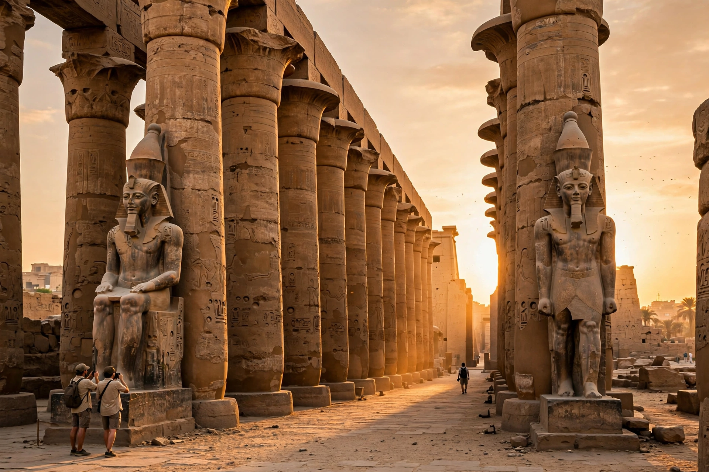

Luxor Temple
From Wikipedia, the free encyclopedia
| Location | Luxor, Egypt |
|---|---|
| Period | New Kingdom (from c. 1400 BCE) |
| Builders | Amenhotep III; Ramesses II and others |
| Dedicated to | The Theban Triad (Amun, Mut, Khonsu) |

Luxor Temple (Arabic: معبد الأقصر) is a large ancient Egyptian temple complex located on the east bank of the Nile River in the city of Luxor (ancient Thebes). Unlike most Egyptian temples, it was not dedicated to a single cult god or a deified king, but to the rejuvenation of kingship itself: it was the focus of the annual Opet Festival, during which the cult images of the Theban Triad — Amun, Mut, and Khonsu — were carried in procession from nearby Karnak along the Avenue of Sphinxes.
History
The temple was principally built under Amenhotep III (reigned c. 1386–1349 BCE) and expanded by Tutankhamun and Ramesses II, who added the great first pylon, fronted by seated colossi and obelisks. One of its two obelisks now stands in the Place de la Concorde in Paris. Later structures include a Roman imperial cult chapel and the Abu Haggag Mosque, built within the courts and still in use today — giving the site some 3,400 years of continuous religious use. Luxor Temple was excavated from sand and rubble beginning in 1885, and forms part of the UNESCO World Heritage Site of Ancient Thebes.